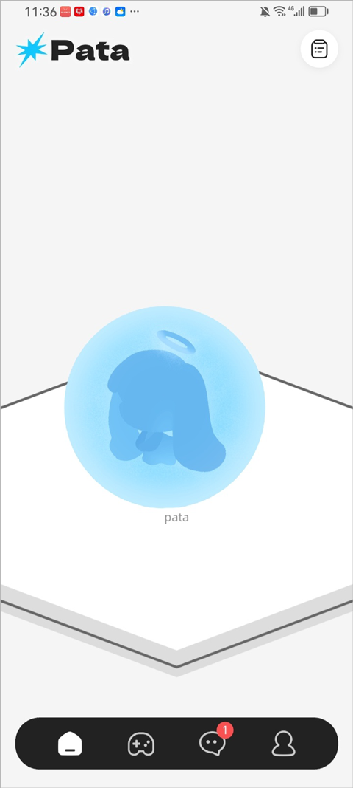
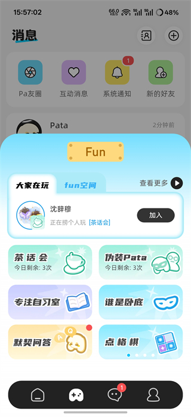

Pata 深度盘点：一只虚拟小猫背后的四层产品哲学
Pata 是一款主打"轻养成 + 社交派对"的虚拟宠物应用——不打卡、不强制、不氪金也能玩完整核心体验，本文从养成、任务、社交、商业化四个维度做系统性梳理。
开头：为什么要认真盘点一款"电子宠物"
电子宠物这个品类并不新鲜。从早年的拓麻歌子到手机上的各种养蛙、养猫、养兔子应用，"陪伴型虚拟宠物"这条赛道已经被反复耕耘了十几年。绝大多数产品的命运只有两种——要么沦为每日打卡签到的工具，要么靠限时活动和付费墙把用户赶走。
Pata 不一样。它上线不算久，但在同类产品里口碑出奇地稳——你可以去它的官网看看完整的产品介绍：用户愿意留在社区里晒自己的小猫、晒家园装修、晒和朋友的派对游戏截图，很少见到"又要做任务好累"或者"不充钱玩不下去"的抱怨。这不是运气好——它的产品设计在几个关键节点上做出了和同行完全不同的选择，而这些选择叠加起来，就构成了一个完整的"反套路"方法论。
下面我们从四个能力域来拆解它：轻养成核心、任务体系、派对小游戏生态，以及最容易翻车的商业化部分。
能力域一：轻养成核心——陪伴感是怎么被做出来的
很多虚拟宠物产品把"养成"理解成一个数值系统：每天喂几次、清洁几次、亲密度涨多少、等级升上去解锁什么。这种设计的问题是，用户很快会发现自己在跟一个进度条互动，而不是一个活物。
Pata 的养成逻辑从一开始就绕开了数值陷阱——安装包从官方下载拿到领养完成只需几分钟。领养环节本身只有 1～2 分钟，一段开场动画、几个日常问题、起个名字（甚至可以跳过用默认名），小家伙就"住"进来了。没有战斗力、没有属性面板、没有每日必做清单——你能做的事情很简单：长按喂养、点它看反应、翻看它的成长日记。

真正的陪伴感来自"小动作"：你不碰它的时候，它会自己在主页里走来走去、偶尔蹲下来蹭一蹭屏幕边缘；喂饱了会开心地蹦跶两下，亲密度涨一点，但不喂也不会饿死、不会生病、不会离家出走。成长日记里记录的是一些很细碎的瞬间——今天它偷看了窗外、明天它藏起来了——这些内容不影响任何数值，但它们让用户觉得"这小东西真的在过日子"。
这个设计的代价是上限很低：养成深度远不如那些有等级、有进化形态、有稀有道具系统的重养成产品。但换来的好处是门槛极低——每天花 5 分钟和花 30 分钟，体验上没有断崖式差距，用户不会因为"今天没打卡被惩罚"而产生负罪感。
能力域二：任务与成长体系——三套任务，零强制打卡
如果说养成核心是"底盘"，任务体系就是 Pata 给用户的"引导地图"。它有三套任务系统，全部给星星币奖励，但在设计哲学上和主流产品完全反着来。
主线任务是一次性的新手引导。大约 20 步，从领养、喂养、买装扮、解锁家园、加第一个好友，到开第一次派对游戏——走完整个流程能攒出 2000 星以上。主线的价值不在于"给奖励"，而在于帮新用户快速摸清产品边界，知道"这个应用里到底能做什么"。
日常任务是每天 2～3 个小任务，0 点本地时间刷新。喂养 5 次、玩 1 局派对游戏、跟好友互动一次——这些任务的共同点是：你正常玩的过程中就自然完成了，不用特意为了任务去做什么。
好友任务是社交引导的核心。和特定好友一起摆放家具、一起玩派对游戏、一起发消息——双方都拿奖励。这套任务不逼你拉多少人，但它确实会让你主动去想"要不要喊那个朋友进来一起玩"。
最关键的设计在于：三套任务全部没有惩罚机制。日常任务今天没做完？明天自动重置，什么都不会少。主线任务做到一半想停？随时可以回来继续，进度不会丢失，也没有"连续 N 天未完成警告"。好友任务没找到人一起？放着就好，不做也不扣东西。
这个"零强制"看起来很简单，但在整个游戏和应用行业里都是少数派——绝大多数产品把任务体系当成了留存钩子，设计的就是"让你不好意思不来"。Pata 反过来了，它让你"不来也完全没关系"，反而让来了的人觉得轻松。
能力域三：派对小游戏生态——不止是打卡，是社交的容器
如果说养成和任务是"单人格"的体验，派对小游戏就是 Pata 真正差异化的地方。应用内置了一套派对小游戏厅，其中 2.0 版本加入的默契问答自定义是最有代表性的。
默契问答和系统给题的默契猜词不同——你可以自己出题，具体玩法和默契度等级在Pata文档里写得很细。好的题目往往是"只在你们之间有背景"的东西："上次吃火锅是在什么店？""我掉过钥匙的那个地方是？""那次聊到凌晨是因为什么？"双方都答完后同时揭晓，答对是默契，答错就当场笑对方。它本质上不是一个"游戏"，而是一个让朋友之间回忆共同经历的借口。
这个小游戏的产品定位很清晰：它不追求竞技性、不追求排行榜、不追求通关时长——它追求的是"让两个人玩完之后关系更好一点"。从社区反馈来看，这个定位确实打中了用户，很多人在晒的不是"我得了多少分"，而是"我和朋友答对了 3/3 灵魂搭子"或者"0/3 被 Pata 歪头震惊了"。

能力域四：商业化的分寸感——双货币，零氪也完整体验
Pata 商业化的口碑在同类产品里是正面的。它用了双货币体系：星星币是免费货币，通过任务、签到、好友互动获得，用来买基础装扮和家具；星核是付费货币，只能人民币购买，用来买稀有装扮、限时礼包和月卡。
关键在于，星核买的东西全部是"好看但不影响核心体验"的。稀有装扮样式更精致、有专属走路拖尾，但它不会让你的 Pata 成长更快、不会给你任何数值加成。核心玩法——养成、派对游戏、共享家园——全程免费，没有付费墙、没有强制弹窗、没有不充钱就玩不下去的体验断裂。
月卡是性价比最高的付费选项：18 元/月，签到星星币翻倍、寻宝次数加倍、专属装扮和桌面组件皮肤。不买月卡也完全可以正常玩，买了就是攒星快一点、装扮多一点选择。
这套设计的背后有一个克制的判断：Pata 的用户来这里是为了"有个小东西陪着"和"跟朋友玩点轻松的"，而不是为了"变强"或者"收集稀有道具"。一旦付费内容触碰了核心体验的公平性，用户留下来的理由就会被摧毁。
短板也要说
当然 Pata 不是完美的。它的几个局限也很明显：
养成深度有限。没有等级、没有进化形态、没有稀有度系统，对于追求"收集全图鉴"或者"养成有明确成长线"的用户来说，玩到一两个月之后可能会觉得"就这样了"。
社交玩法的上限依赖好友数量。共创空间、好友任务、派对游戏——这些功能需要有人一起玩才有意思。如果身边没有朋友在用，这套社交玩法基本就闲置了。
商业化的长期可持续性存疑。完全不碰核心体验的商业化设计很良心，但也意味着付费意愿强的用户找不到足够多的付费点。星核装扮更新慢、月卡权益固定，R2 收入天花板可能比同行低不少。
什么样的人该用它
综合来看，Pata 适合三类人：
需要"不打扰的陪伴感"的人。如果你试过很多虚拟宠物应用，最后都因为"每天必须打卡"而卸载了，Pata 值得试一试。它的不打扰不是"功能少"，而是"你想什么时候来都可以，来了就有事情做，不来也不会错过什么"。
想找低门槛社交入口的人。默契问答、共创空间、好友任务这些功能，本质上都是让你有一个"喊朋友出来玩"的轻量级理由，不需要复杂的游戏技能，也不需要花很多时间。
对"良心商业化"有预期的家长或学生。双货币体系不碰核心体验、没有强制弹窗、没有第三方代充渠道——如果你在给孩子找一个安全的陪伴型应用，或者自己是学生党不想在虚拟宠物上氪太多，Pata 的设计边界很清晰。
不适合的人也很明确：追求重养成深度、收集稀有度、或者把虚拟宠物当成一个有明确升级路线的"游戏"来玩的用户，Pata 可能会让你觉得不够味。
Pata 的设计哲学其实很朴素：把"陪伴"这件事做得像一个好用的桌面小工具——安静、随手、不吵你，但一直在那里。它没有追求成为下一个爆款，而是在一个已经拥挤的品类里，靠"反套路"找到了自己的位置。整套中文资料我同步维护在三个地方，方便不同环境查阅：主仓库放 GitHub，国内镜像在 Gitee，另外 GitCode 也有一份完整备份。